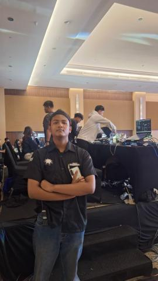
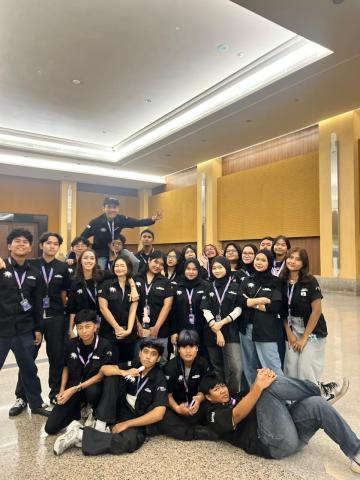
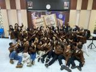
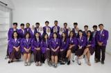
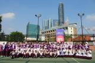
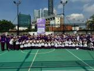
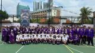
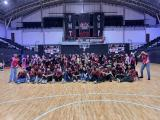

Mahasiswa Universitas Negeri Surabaya
Saya merupakan mahasiswa yang antusias dan bermotivasi tinggi dalam mempelajari ilmu keorganisasian. Memiliki pengalaman dalam bidang desain grafis serta memiliki dasar komunikasi yang baik, kemampuan dalam memimpin, bekerja dalam tim, dan menyelesaikan masalah secara solutif serta berorientasi pada target.
Berpengalaman mengonsep, mengoordinasi, dan memonitor pelaksanaan acara skala sekolah hingga organisasi eksternal.
Memiliki keterampilan dalam merancang visual konten media sosial (feeds Instagram) dan kemampuan komunikasi dasar yang baik.
Dokumentasi kegiatan organisasi, acara, dan kepanitiaan.







Meraih predikat peringkat paralel dalam pembentukan karakter Pancasila di tingkat sekolah menengah atas.
Berhasil meraih medali emas pada kompetisi sains tingkat nasional di bidang studi Geografi.
Terbuka untuk kesempatan kolaborasi dalam organisasi, kepanitiaan acara (event management), maupun proyek desain grafis.
Download Resume →